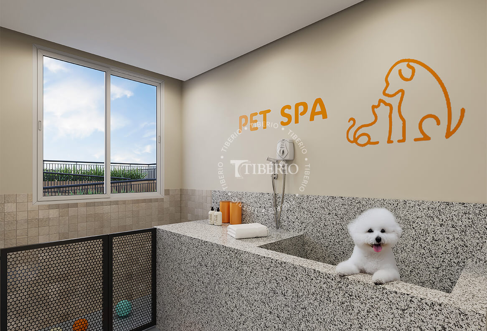

Sublime Pompéia: apartamentos de 3 dormitórios
Conheça os apartamentos da Tibério na Pompéia, com suíte, varanda gourmet com churrasqueira e 2 vagas determinadas.
Galeria de Fotos do Sublime Pompéia
Conheça alguns dos ambientes e espaços de lazer do empreendimento.




Conheça o Sublime Pompéia da Tibério
O Sublime Pompéia é uma opção para quem procura apartamento de 3 dormitórios na Zona Oeste de São Paulo, em uma região com infraestrutura de comércio, serviços, lazer e mobilidade.
As plantas de 75 e 77 m² oferecem três dormitórios, uma suíte e ambientes planejados para proporcionar conforto e praticidade no dia a dia.
Um dos destaques dos apartamentos é a varanda gourmet com churrasqueira, que amplia as possibilidades de convivência e integração dos ambientes.
As unidades desta tipologia contam com duas vagas determinadas de garagem, conforme as características informadas do empreendimento.
O condomínio oferece espaços de lazer e convivência, incluindo academia, Pet Spa, Play Sports e espaço gourmet.
Ficha Técnica do Sublime Pompéia
| Empreendimento | Sublime Pompéia |
| Construtora | Tibério |
| Bairro | Pompéia |
| Região | Zona Oeste de São Paulo |
| Tipologia | Apartamentos de 3 dormitórios |
| Metragens | 75 e 77 m² |
| Suítes | 1 suíte |
| Vagas | 2 vagas determinadas |
| Varanda | Varanda gourmet com churrasqueira |
| Status | Em comercialização |
Planta do Apartamento de 3 Dormitórios
Confira a planta do apartamento e conheça a distribuição dos ambientes.

Planta de 3 Dormitórios
Apartamentos com três dormitórios, suíte e ambientes planejados para o conforto da família.

Varanda Gourmet
Ambiente com churrasqueira para aproveitar momentos de convivência com familiares e amigos.
Lazer e Diferenciais do Sublime Pompéia
🏋 Academia
Espaço fitness para atividades físicas e exercícios.
🐶 Pet Spa
Espaço destinado aos cuidados com os animais de estimação.
⚽ Play Sports
Área de lazer esportivo e recreação.
🍽 Espaço Gourmet
Ambiente de convivência para receber familiares e amigos.
🔥 Varanda com Churrasqueira
Mais conforto e praticidade para aproveitar a área social do apartamento.
🚗 Duas Vagas Determinadas
Comodidade para os moradores desta tipologia.
Localização do Sublime Pompéia
O Sublime Pompéia está situado na região da Pompéia, na Zona Oeste de São Paulo. O bairro conta com opções de comércio, serviços, gastronomia, lazer e acesso a importantes pontos da região, como Allianz Parque, Shopping Bourbon, SESC Pompeia e Hospital São Camilo.
A região também conta com projetos de expansão da mobilidade urbana, incluindo a futura estação Pompeia, conforme o planejamento da rede metroviária.
Solicite Informações do Sublime Pompéia
Receba informações sobre plantas de 75 e 77 m², valores, disponibilidade das unidades, condições de pagamento e agendamento de visita.
💬 Falar com Sandro pelo WhatsAppPerguntas Frequentes sobre o Sublime Pompéia
Quantos dormitórios possuem os apartamentos?
Esta página apresenta a tipologia de apartamentos de 3 dormitórios do Sublime Pompéia.
Quais são as metragens dos apartamentos?
As plantas desta tipologia possuem 75 e 77 m².
Os apartamentos possuem suíte?
Sim. As unidades desta tipologia contam com uma suíte.
Quantas vagas de garagem estão disponíveis?
Esta tipologia conta com duas vagas determinadas de garagem.
Os apartamentos possuem varanda gourmet?
Sim. Os apartamentos contam com varanda gourmet com churrasqueira.
Quais são os espaços de lazer do empreendimento?
Entre os espaços informados estão academia, Pet Spa, Play Sports e espaço gourmet.
Como consultar valores e disponibilidade?
Entre em contato pelo WhatsApp para consultar valores, disponibilidade das unidades, plantas e condições de pagamento.